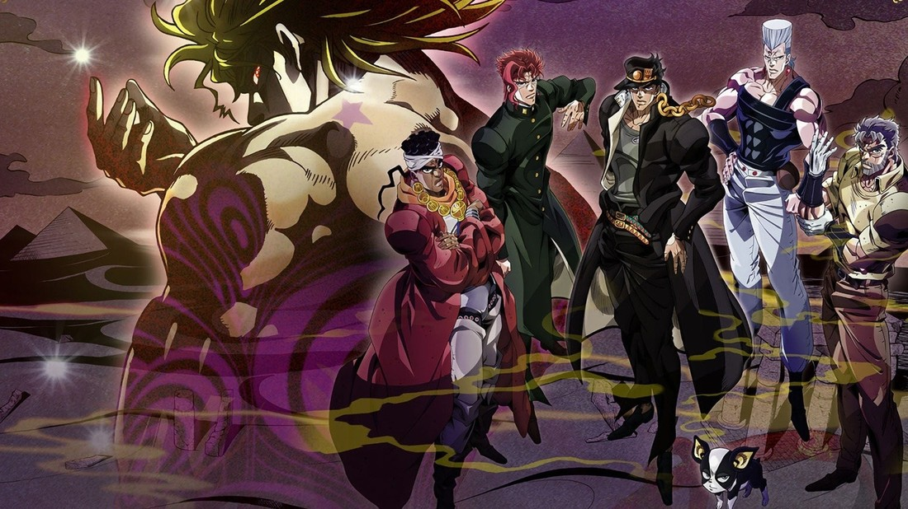
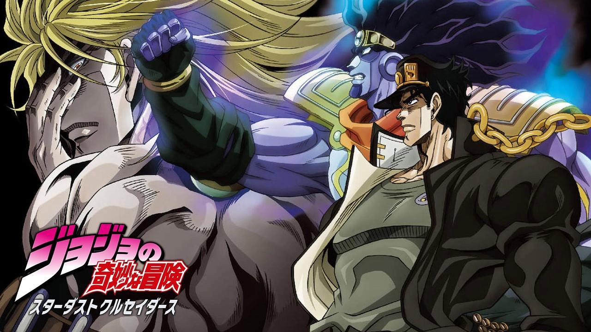

JoJo's Bizarre Adventure
Stardust Crusaders (スターダストクルセイダース Sutādasuto Kuruseidāsu) é a terceira parte de JoJo's Bizarre Adventure, serializada na Weekly Shōnen Jump de março de 1989 a abril de 1992. O arco é precedido por Battle Tendency e abrange 152 capítulos.
Resumo
No Japão, 1987 (Mais tarde passou a ser 1988),[1] Jotaro Kujo, neto de Joseph Joestar, foi preso e se recusa a sair de sua cela, acreditando estar possuído por um espírito maligno. Após ser chamado por Holy, filha de Joseph e mãe de Jotaro, Joseph chega com um associado, Mohammed Avdol. Eles explicam que o “espírito maligno” de Jotaro é na verdade uma manifestação de seu espírito de luta, chamado Stand, e revelam que eles também possuem Stands. Joseph explica que o súbito aparecimento de seus Stands é causado pelo inimigo de seu avô, Jonathan Joestar: Dio Brando, agora referido simplesmente como DIO. DIO sobreviveu à sua batalha final com Jonathan decapitando o cadáver de seu inimigo e prendendo sua própria cabeça nele. Agora se preparando para a conquista global, DIO despertou seu próprio Stand (que desperta os Stands do resto da linhagem Joestar devido ao uso do corpo de Jonathan) e recrutou assassinos que usam Stand para matar os descendentes restantes de Jonathan. Logo depois, Jotaro usa seu Stand, que mais tarde é chamado de Star Platinum, para derrotar o primeiro desses assassinos, um estudante transferido chamado Noriaki Kakyoin, antes de libertar Kakyoin do controle de DIO, removendo um botão de carne parasita dele. Holy logo fica gravemente doente devido a um Stand se manifestando nela, o que a está matando lentamente devido à sua personalidade reservada. Com pouca hesitação, Jotaro, Joseph, Avdol e Kakyoin iniciam uma jornada para o Egito para matar DIO e salvar a vida de Holy. No caminho, eles derrotam outro assassino que sofreu lavagem cerebral, chamado Jean Pierre Polnareff, que mais tarde se junta à missão de matar DIO e vingar a morte de sua irmã, cujo assassino está entre as forças de DIO.
Forçados a viajar a pé depois que os assassinos de DIO conseguem frustrar sua viagem de avião e navio, o grupo encontra Hol Horse e o assassino da irmã de Polnareff, J. Geil, em Calcutá, com Avdol aparentemente morto durante o confronto. Polnareff mata J. Geil com a ajuda de Kakyoin, e o grupo restante viaja para o Paquistão. Depois de derrotar a mãe de Geil, uma leal a Dio chamada Enya, o grupo chega ao Mar Vermelho , onde Polnareff descobre que Avdol fingiu sua morte para adquirir um submarino que lhes permite chegar ao Egito.
Ao chegar em Abu Simbel , os heróis são acompanhados por Iggy, um Boston Terrier com um Stand próprio, enquanto enfrentam o primeiro dos nove Stands com nomes de divindades egípcias (em vez do tema do tarô de antes). Kakyoin é ferido na luta e levado ao hospital para se recuperar. Depois que o grupo derrotou vários outros usuários de Stand ao chegar ao Cairo, Iggy descobre e os leva para a mansão de DIO, com Kakyoin se juntando a eles. Na entrada da mansão, o grupo é dividido - Jotaro, Joseph e Kakyoin lutam contra o último dos nove deuses egípcios, enquanto Polnareff, Avdol e Iggy avançam pela mansão. No entanto, um dos servos de DIO, Vanilla Ice, mata Avdol e Iggy, ambos os quais se sacrificam separadamente para salvar Polnareff. Um Polnareff enfurecido luta contra Vanilla Ice e descobre que Vanilla Ice foi transformado em um vampiro como DIO, um fato que o próprio Vanilla Ice não sabia. Polnareff inunda a sala com luz, desintegrando Vanilla Ice e vingando seus amigos.
Jotaro, Joseph, Kakyoin e Polnareff finalmente encontram DIO e escapam de sua mansão. Segue-se uma perseguição pelo Cairo, levando Kakyoin a confrontar DIO e seu Stand, The World, cujo poder DIO se esforçou muito para manter em segredo (tendo anteriormente assassinado Enya para impedi-la de contar aos heróis). Embora mortalmente ferido pelo The World, Kakyoin consegue deduzir a habilidade do Stand de parar o tempo por cinco segundos e secretamente retransmitir isso para Joseph em seus momentos finais. Joseph consegue passá-lo para Jotaro, mas é rapidamente morto por DIO, que usa seu sangue para aumentar a duração de sua habilidade para nove segundos. Com a maioria de seus aliados mortos e Polnareff inconsciente, Jotaro é deixado sozinho para lutar contra DIO. Durante a luta, ambos os lados descobrem que seus respectivos Stands são semelhantes em alcance, poder e habilidade, o que significa que Jotaro também é capaz de usar os poderes de parar o tempo do mundo. Jotaro primeiro usa essa habilidade para se mover brevemente enquanto Dio para o tempo, mas ele aprende como parar o tempo diretamente quando DIO tenta esmagá-lo com um golpe com rolo compressor. Dio tenta matar Jotaro com um chute final, mas um contra-ataque de Jotaro divide The World em dois, matando ele e DIO. Jotaro transfunde o sangue de DIO de volta para Joseph e usa Star Platinum para reiniciar seu coração parado (uma habilidade que ele havia usado anteriormente em si mesmo enquanto se fingia de morto durante a luta com DIO), revivendo-o. Os dois Joestars então expõem o cadáver de DIO ao sol, destruindo o vampiro para sempre. Jotaro e Joseph se despediram de Polnareff antes de retornar ao Japão, já que Holy se recuperou totalmente.